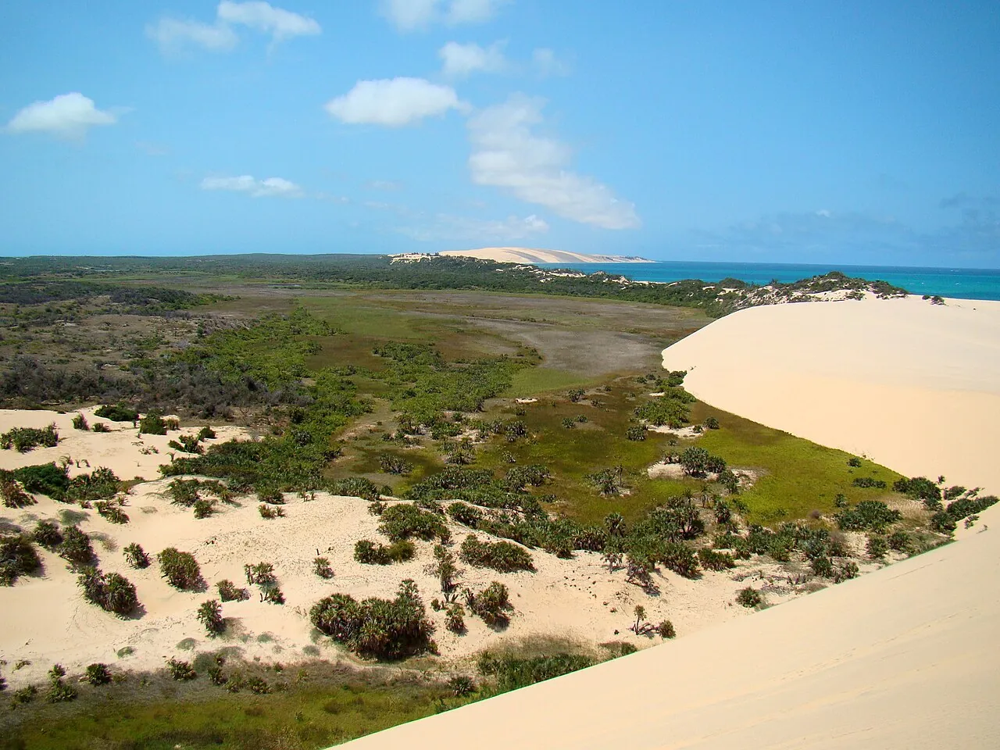

Archipel de Bazaruto
Inhambane, Mozambique · snorkeling, plongée, kayak

Parc national de dunes et de lagons, refuge des derniers dugongs d’Afrique de l’Est. Récifs et bancs de sable à perte de vue.
- Lieu
- Inhambane, Mozambique
- Niveau
- Débutant
- Activités
- snorkeling, plongée, kayak
- Type d'eau
- Mer / océan
- Coordonnées
- -21.63, 35.47 (position approximative du secteur)
Dangers à connaître
- Courants de marée forts entre les îles.
- Soleil intense sur les bancs de sable.
Le conseil d'Ocean Buddy
Pars avec un opérateur du parc et paie le droit d’entrée qui finance la protection.
Ouvrir dans Ocean Buddy Télécharger sur l'App Store
Source : Fiche Ocean Buddy · septembre 2026 · à vérifier localement.